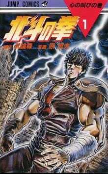
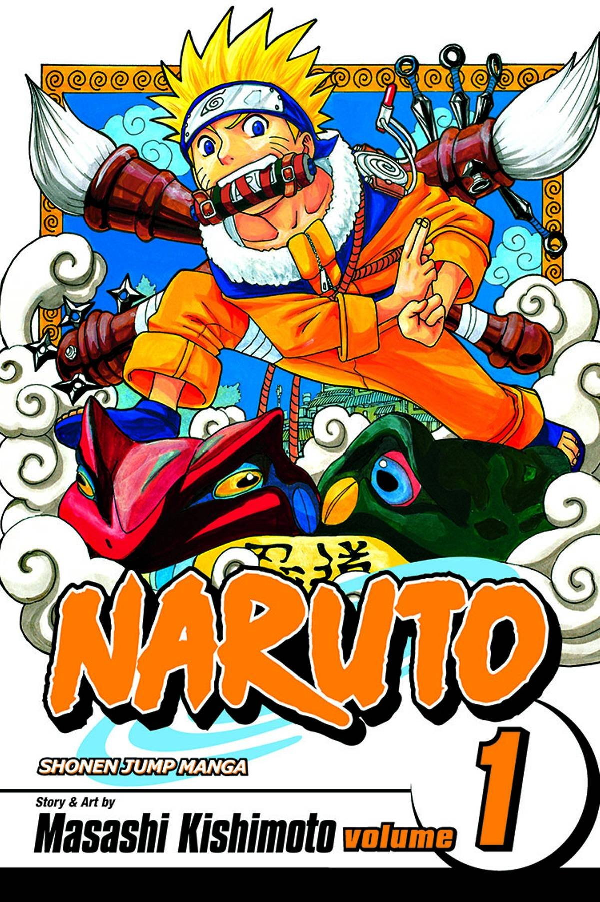

Hajime no Ippo (George Morikawa, 1989 – present)
Fist of the North Star ( Buronson, 1983 – 1988)
Rave Master (Hiro Mashima, 1999 – 2005)
-
One Piece (Eiichiro Oda, 1997 – present)
Gol D. Roger, the king of the pirates, has been caught. He’s about to be executed. In his final moments, he challenges his fellow pirates to find a treasure he hid, the One Piece. The pirate who finds it will become the king of all pirates. Two decades have passed. The plucky nitwit Monkey D. Luffy sails the oceans and searches for the treasure. He ate a fruit that gives him the ability to stretch like rubber. Luffy assembles a team of misfits, and together they seek the legendary One Piece. One Piece is the bestselling manga in history; its popularity is through the roof. Readers of all demographics and genders love the story. Even non-manga fans follow One Piece with cult-like enthusiasm. One Piece offers simple, yet enjoyable art, endearing characters, and a balance of action and adventure. There’s heavy development of all the characters, including the extras. Each chapter is a page-turner. You won’t be bored for a single second. One Piece is hands down the best. Fullmetal Alchemist (Hiromu Arakawa, 2001 – 2010)
Edward and his brother Alphonse are the main characters in this amazing manga. They work for the state as alchemists. Both were badly injured in an experiment gone wrong. Edward lost two limbs, and Alphonse became trapped in armor. They try to put their dark past behind them until they have the power to reverse it. Edward and his brother investigate various problems for the state. This leads them into a web of government conspiracies and secret organizations. The duo pushes the limits of their ability to solve the mysteries behind alchemy. They long to make themselves normal again. Fullmetal Alchemist is a dark science fantasy story. It deals with real-world issues like war, genocide, and government corruption. It’s a shonen manga to the core. Even so, it’s praised for the strong female characters and smart action sequences. The occasional light-hearted drama scenes add a nice change of pace. The manga matures with its audience. Fans have raved over Fullmetal Alchemist for years. FMA treats its audience as smart. It offers fantastic, cleverly thought out adventure on every page.-
Dragon Ball (Akira Toriyama, 1984 – 1995)
The Dragon balls are seven golden balls that have the ability to grant a wish. They summon Shenron, the wish dragon. Teenage girl Bulma is on a quest to find them all. Accompanied by a monkey-tailed boy named Son Goku, they go on adventures around the world. Goku undergoes a relentless training regimen under the legendary Master Roshi. His goal is to fight in the Tenkaichi Budokai Martial Arts Tournament. As Goku gets stronger, more evil comes his way. Eventually, he and his friends must save the earth from invaders from outer space. Dragon Ball is one of the most, if not the most, beloved manga of all time. Still read decades after its run, it’s the most influential manga of all time. Dragon Ball is humorous in tone… but the plot can get sinister. The action entices young boys everywhere. Dragon Ball is an icon. It’s an enduring story that became an epic franchise. Ask any anime fan what Dragon Ball is and they’ll tell you tales of their childhood. Monster (Naoki Urasawa, 1994 – 2001)
Dr. Kenzo Tenma is a benevolent doctor and brain surgeon. He’s tired of the political bias towards certain classes of people in the hospital where he works. In the wake of a massacre, he tries to change how things work. He takes care of fraternal twins Anna and Johan. Johan has a gunshot wound to his head. The bullet was meant for the mayor of the town. Johan is saved but the mayor dies. Tenma is vilified by his co-workers. They wanted him to save the mayor before saving the young, low-status Johan. Everyone who antagonizes Dr. Tenma in the hospital gets murdered one by one, and the kids are nowhere to be found. The Police think he’s the killer, but they have no evidence. Who is the cold-blooded killer? Who is this… monster? Monster is masterful suspense thriller that keeps you guessing. The manga is a top shelf crime-suspense experience. Every scene is a glut of misinformation. You can never tell what might happen next. The art is cinematic and calculated. Every stroke of the brush is meticulous, and the expressions are never exaggerated. Each page is perfection itself. The character’s expressions show each emotion subtly, without overdoing it. Scenic perfection: These two words describe Monster’s art better than any other phrase could.Berserk (Kentaro Miura, 1989 – present)
In a world of chaos, bloodshed, and unending warfare, Guts is sick of it all. He’s been raised by an abusive mercenary, and now goes out on his own. He becomes a wandering mercenary in the medieval countryside. He’s forcibly recruited by Griffith, the leader of the Bank of the Hawk mercenary group. His fate changes once their team fights Nosferatu Zodd. Zodd defeats both him and Griffith. Zodd warns Guts his friendship with Griffith will be the source of his death. But will it? Berserk is a dark fantasy action adventure manga. It’s acclaimed for the action-filled frames and the unrelenting story of sadness and war. It explores the concepts of hate and crushing despair. The reader sympathizes with the characters, however contemptuous they may be. Berserk is not your usual manga. Reading the story makes you feel like a wrecking ball just crashed straight into your heart.-
Slam Dunk (Takehiko Inoue, 1990 – 1996)
Hanamichi Sakuragi is a bad guy and a gang leader. He resolves everything with his fists and is unpopular with women. One day he meets Haruko Akagi, a beautiful young girl. She asks him if he plays basketball since he’s extremely tall. Trying to impress Haruko, he pretends to be a basketball genius. He tries to perform the coolest move in basketball: the slam dunk. He fails miserably. After a string of wild events, Hanamichi decides to join his school’s ailing basketball team. He works hard at developing his skills. He tries to learn to play basketball and become the great player Haruko would love. Slam Dunk is the most influential sports manga in history. It’s inspired a generation of Japanese youth to play basketball. Slam Dunk is still popular in Japan. Inoue’s art is a modern marvel with its consistency and realism. The graphics show how much each character – hero or antagonist — loves basketball. For the love of the game and the girl, Slam Dunk is a once in a generation manga. Everyone should read it. Naruto (Masashi Kishimoto, 1999 – 2014)
Uzumaki Naruto lives in the Ninja Village of the Hidden Leaf. He’s a mischievous orphan with no good qualities. He’s troublesome, hyperactive, and dumb. A bad student who nobody likes, he has only one dream in life… to become the village leader (the Hokage) someday. Naruto doesn’t know a nine-tailed fox demon lives inside him. The fox is a relentless being of pure energy that devastated the village 12 years ago. The monster was sealed inside him by his dead father, The Fourth Hokage, to protect the village. His father hoped Naruto would someday become a hero who leads the village. Naruto is on a quest to fulfill his dreams. He wants to prove to everyone he’s capable of becoming Hokage. Naruto has been a household name for the past decade. It’s the 3rd bestselling manga in history. The Naruto character is magically annoying… yet likable at the same time. The stories are well crafted, and the art is topnotch. The fights can get unbelievably absorbing. The manga is filled to the brim with characters, but each one has a purpose. They come alive in every frame. Naruto’s balanced plot and action hook the reader until the end.Hunter x Hunter (Yoshihiro Togashi, 1998 – present)
Gon Freecss enjoys a wonderful childhood on a quiet island. One day he meets a stranger who tells him his dead father is actually alive. His father is a world-class, top-level Hunter. Hunters are privileged people in the world. They achieve great things through their adventures. Gon Freecss leaves his peaceful island, determined to find his father. He dives into the mysterious world of Hunters. Armed with a fishing rod, good friends, and bottomless determination, he goes on an endless adventure. He must become a Hunter and find the father he never had. Hunter x Hunter has been continuously praised for its characters and intricate plot. A lot happens at the same time, but Hunter x Hunter never loses track. It’s filled with an assortment of crazy people in unusual situations. Missing one small detail leaves an empty spot in your heart… a tingling sensation you missed something. The story imparts strong moral values. You’ll smile with satisfaction after every chapter you read.Rurouni Kenshin (Nobuhiro Watsuki, 1994 – 1999)
At the end of the Edo era, an assassin known as Hitokiri Battousai has earned infamy. He has legendary fighting abilities, and he’s a cold-blooded murderer. It’s now the early years of the Meiji Era in Tokyo. The old ways have been cast aside and samurai are displaced. A wanderer finds kendo (Japanese fencing) instructor Kaoru Kamiya in a pickle. A murderer, using her family’s sword style, claims he’s Battousai and attacks her. The wanderer defeats the murderer. He states that he, the dirty wanderer with a cross-shaped scar on his face, is the real Battousai of the legend. Over the course of the series, he casts off his old, evil ways and becomes a great hero. Rurouni Kenshin gets acclaim for its flowing story and beautiful art. The story appeals to both men and women. Kenshin belongs among the top manga heroes of all time. The supporting characters mesh well, and the subplots are tight. Rurouni Kenshin is a samurai romance. It’s a must-read for anyone who loves good stories, great villains, and fantastic characters.-
JoJo’s Bizarre Adventure ( Hirohiko Araki, 1987 – present)
The Joestar family has always been destined for greatness. Something odd happens once in several generations. A family member discovers a secret gift for the supernatural; they have powers that decide the fate of the world. Starting with Jonathan Joestar, each successor learns of a looming evil. Only the chosen Joestar and his companions have the ability to thwart the evil. The world needs someone to save them and a Joestar will always be there to fight. Evil will never win… not while a Joestar is alive! JoJo’s Bizarre Adventure is the epitome of a macho manga. Injected with lots of testosterone, JoJo’s art is of a quality you’ve never seen before. Crisp, earth-shattering action gives fans something to relish. The manga is considered an essential element of any top 10 manga list. The macho characters and plots endear Jojo’s Bizarre Adventure to its fans.


